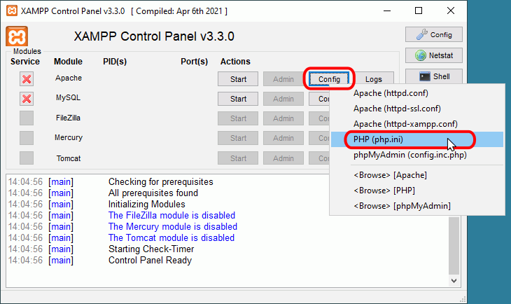
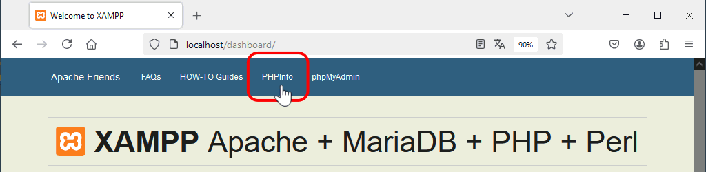

Esta lección trata los aspectos de la configuración de Apache y de PHP que utilizo en clase y que difieren de la configuración predeterminada de XAMMPP. En la lección Configuración de Apache y PHP (2) se tratan otros aspectos de interés pero que no son necesarios modificar con respecto a la configuración predeterminada de XAMPP.
Esta explicación ha sido preparada para la versión XAMPP 8.2.4, pero seguramente se puede aplicar en cualquier versión 8.2.X e incluso 8.X.
Cómo modificar los archivos de configuración
 Antes de modificar cualquier archivo de configuración, recomiendo hacer una copia de seguridad del archivo de configuración actual.
Antes de modificar cualquier archivo de configuración, recomiendo hacer una copia de seguridad del archivo de configuración actual.
Si al modificar algún archivo de configuración nos equivocamos e introducimos errores, es probable que el servidor no pueda arrancar. Si no somos capaces de encontrar el error, siempre podemos restaurar el archivo de configuración anterior y empezar de nuevo, sin necesidad de reinstalar XAMPP.
Al modificar cualquier archivo de configuración, es conveniente documentar los cambios. Para ello, recomiendo hacer tres cosas:
- no modificar la línea del archivo original, sino añadirle el carácter de comentario al principio de la línea (almohadilla o punto y coma)
- añadir la línea modificada
- añadir una línea de comentario indicando la fecha, el autor y el cambio realizado.
Por ejemplo, la siguiente línea es una línea del archivo de configuración de Apache:
DocumentRoot "C:/xampp/htdocs"
Tras la modificación, el archivo de configuración quedaría así (se ha resaltado el texto añadido):
# 2023-09-11. Barto. He cambiado el directorio raíz del servidor
# DocumentRoot "C:/xampp/htdocs"
DocumentRoot "C:/www"
Configuración de Apache
El fichero de configuración de Apache es el archivo httpd.conf, un archivo de texto sin formato.
En httpd.conf las líneas comentadas empiezan por el carácter almohadilla (#). En Windows, al escribir una ruta de directorio en httpd.conf se puede utilizar tanto la barra como la contrabarra (es decir, se puede escribir tanto C:\xampp como C:/xampp).
En Windows el archivo httpd.conf se encuentra en el directorio C:\xampp\apache\conf\.
Se puede abrir directamente el archivo httpd.conf haciendo clic en el botón "Config" correspondiente a Apache y eligiendo la primera opción:

En esta lección se comentan algunas directivas de configuración de Apache. Antes de modificar cualquier archivo de configuración, se recomienda hacer una copia de seguridad del archivo de configuración.
Ubicación de las páginas web
Con la configuración inicial de XAMPP 8.2, al abrir en el navegador una dirección que empieza por http://localhost/, Apache busca el elemento solicitado a partir del directorio raíz del servidor, indicado por la directiva DocumentRoot del archivo httpd.conf:
- si se trata de un archivo:
- si encuentra el archivo, lo sirve al navegador.
- si no encuentra el archivo, envía un error 404 (objeto no localizado)
- si se trata de un directorio:
- si encuentra el directorio, busca si existe alguno de los archivos indicados por la directiva DirectoryIndex (por ejemplo, en XAMPP 8.2, index.php index.pl index.cgi index.asp index.shtml index.html index.htm etc) :
- si encuentra alguno de esos archivos, lo sirve al navegador.
- si no encuentra ninguno de esos archivos, Apache envía al navegador el listado del directorio.
- si no encuentra el directorio, envía un error 404 (objeto no localizado)
Esta configuración es adecuada para entornos de programación, pero en entornos de producción se suele modificar, por ejemplo, para no enviar el listado del directorio.
En el directorio raíz del servidor, XAMPP 8.2 crea una serie de páginas que permiten administrar el servidor. Por eso al abrir en el navegador la dirección http://localhost se abre una página de administración propia de XAMPP.
A la hora de añadir otras páginas en el servidor, se puede hacer de varias formas:
- Añadir nuestras páginas en el directorio predeterminado de XAMPP. Tiene el inconveniente de que ese directorio no está donde se suelen guardar los documentos (en Windows, Documentos) y estamos mezclando nuestros ficheros con los de XAMPP.
- Cambiar el directorio raíz del servidor, modificando la directiva DocumentRoot (como se explica en la lección Configuración 2). Tiene el inconveniente de que no podríamos acceder a la página web de administración de XAMPP (aunque podríamos crear una directiva Alias para posibilitar el acceso).
- Crear directorios de usuario, mediante la directiva UserDir (como se explica en la lección Configuración 2). Es la mejor solución en un ordenador con varios usuarios de Windows para que cada usuario tenga sus propias páginas separadas e independientes del resto. Cada usuario puede guardar sus páginas en un directorio (con el mismo nombre para todos los usuarios, pero cada uno en su propia carpeta de Documentos) y cada usuario sólo ve sus páginas.
- Crear uno o varios alias, mediante la directiva Alias. Es la mejor solución cuando sólo hay un usuario de Windows que utiliza XAMPP. También se puede utilizar cuando hay varios usuarios, pero entonces estos tienen que tener en cuenta los alias creados por los demás, puesto que los nombres de los alias no se pueden repetir.
En mis clases, dado que sólo hay un usuario de Windows, aunque puede haber varios alumnos que utilicen el mismo usuario, optaremos por la solución de crear alias, uno para cada alumno que utilice el ordenador.
Alias
La directiva Alias permite que el servidor abra páginas situadas en cualquier directorio, aunque no estén dentro del directorio establecido mediante la directiva DocumentRoot.
Para que Apache pueda acceder a esos directorios, en el archivo httpd.conf debe estar cargado el módulo alias mediante la directiva:
LoadModule alias_module modules/mod_alias.so
En XAMPP 8.2 esta directiva no está comentada de forma predeterminada, por lo que no es necesario modificarla, aunque conviene comprobar su valor.
Además, hay que añadir en el archivo httpd.conf una directiva Alias dentro de la directiva <IfModule alias_module> (que ya existe En XAMPP 8.2).
Como ejemplo, vamos a crear un par de alias. Supongamos que un usuario está siguiendo un curso de PHP y al mismo tiempo en su trabajo también escribe programas en PHP. Este usuario quiere guardar los archivos en diferentes carpetas de Documentos, pero al mismo tiempo acceder fácilmente a los archivos sin tener que escribir direcciones muy largas:
| Programas |
Ruta en el navegador |
Carpeta en el disco |
| Programas escritos en el curso de PHP |
http://localhost/clase/ |
Documentos > Cursos > PHP |
| Programas escritos para el trabajo |
http://localhost/curro/ |
Documentos > Trabajo > PHP |
Para ello, hay que añadir en el archivo httpd.conf dos directivas Alias dentro de la directiva <IfModule alias_module>. En esta directiva se pueden crear redirecciones, alias y alias de script. Para mantener el archivo bien organizado, se recomienda escribir los alias a continuación de las líneas de comentario relativas a los alias. El ejemplo siguiente muestra los dos alias del ejemplo anterior.
- en Windows:
<IfModule alias_module>
# ...
# 2023-09-11. He añadido este Alias para los programas escritos en el curso de PHP.
Alias /clase "C:\Users\NombreDeUsuario\Documents\Cursos\PHP"
<Directory "C:\Users\NombreDeUsuario\Documents\Cursos\PHP">
Options Indexes FollowSymLinks Includes ExecCGI
AllowOverride All
Require all granted
</Directory>
# 2023-09-11. He añadido este Alias para los programas escritos para el trabajo.
Alias /curro "C:\Users\NombreDeUsuario\Documents\Trabajo\PHP"
<Directory "C:\Users\NombreDeUsuario\Documents\Trabajo\PHP">
Options Indexes FollowSymLinks Includes ExecCGI
AllowOverride All
Require all granted
</Directory>
# ...
</IfModule>
- en GNU/Linux:
<IfModule alias_module>
# ...
# 2023-09-11. He añadido este Alias para los programas escritos en el curso de PHP.
Alias /clase "/home/NombreDeUsuario/Documents/Cursos/PHP"
<Directory "/home/NombreDeUsuario/Documents/Cursos/PHP">
Options Indexes FollowSymLinks Includes ExecCGI
AllowOverride All
Require all granted
</Directory>
# 2023-09-11. He añadido este Alias para los programas escritos para el trabajo.
Alias /curro "/home/NombreDeUsuario/Documents/Trabajo/PHP"
<Directory "home/NombreDeUsuario/Documents/Trabajo/PHP">
Options Indexes FollowSymLinks Includes ExecCGI
AllowOverride All
Require all granted
</Directory>
# ...
</IfModule>
Como se comenta en el apartado de la directiva DocumentRoot, se debe incluir una directiva <Directory> para el directorio indicado en la directiva Alias.
Hay que tener cuidado con las erratas, ya que cualquier error impedirá que Apache se ponga en marcha.
Un alias puede abarcar varios pasos de la ruta, como muestra el ejemplo siguiente.
| Programas |
Ruta en el navegador |
Carpeta en el disco |
| Programas escritos en el curso de PHP |
http://localhost/iaw/php/ |
Documentos > Cursos > 2023 > PHP |
La directiva Alias sería la siguiente.
- en Windows:
<IfModule alias_module>
# ...
# 2023-09-11. He añadido este Alias para los programas escritos en el curso de PHP.
Alias /iaw/php "C:\Users\NombreDeUsuario\Documents\Cursos\2023\PHP"
<Directory "C:\Users\NombreDeUsuario\Documents\Cursos\2023\PHP">
Options Indexes FollowSymLinks Includes ExecCGI
AllowOverride All
Require all granted
</Directory>
# ...
</IfModule>
- en GNU/Linux:
<IfModule alias_module>
# ...
# 2023-09-11. He añadido este Alias para los programas escritos en el curso de PHP.
Alias /iaw/php "/home/NombreDeUsuario/Documents/Cursos/2023/PHP"
<Directory "/home/NombreDeUsuario/Documents/Cursos/2023/PHP">
Options Indexes FollowSymLinks Includes ExecCGI
AllowOverride All
Require all granted
</Directory>
# ...
</IfModule>
Configuración de PHP
El archivo php.ini
El archivo de configuración de PHP es el archivo php.ini, un archivo de texto sin formato.
En php.ini las líneas comentadas empiezan por el carácter punto y coma (;).
En Windows, el archivo php.ini se encuentra en el directorio C:\xampp\php\php.ini
Se puede abrir directamente el archivo php.ini haciendo clic en el botón "Config" correspondiente a Apache y eligiendo opción correspondiente:

Nota: La ruta del archivo php.ini que está utilizando Apache se puede ver en el campo "Loaded Configuration File" de la primera tabla que muestra la función phpinfo(). En el menú de la página de administración de XAMPP 8.2 hay una opción phpinfo() que muestra la configuración de PHP.


Directivas de configuración en php.ini
Se comentan a continuación algunas directivas de configuración de PHP, aunque también se puede consultar el manual de PHP. Antes de modificar cualquier archivo de configuración, se recomienda hacer una copia de seguridad del archivo de configuración original.
En el archivo de configuración php.ini, las líneas que comienzan por ; (punto y coma) son líneas comentadas, es decir, que no se tendrán en cuenta cuando PHP cargue el archivo. En el archivo de configuración se pueden encontrar bloques de varias líneas comentadas que explican el significado de una directiva y más adelante una línea sin comentar que establece el valor de la directiva. Un error de principiante bastante común es modificar el valor de la directiva en una línea comentada, lo que no sirve para nada.
error_reporting
La directiva error_reporting especifica el tipo de errores notificados por PHP. Por ejemplo:
| Directiva / Valor |
Significado |
| error_reporting=E_ALL & ~E_NOTICE & ~E_DEPRECATED |
Se muestran todos los errores, menos los avisos y obsoletos. |
| error_reporting=E_ALL & ~E_DEPRECATED |
Se muestran todos los errores, menos los obsoletos |
| error_reporting=E_ALL ; Valor recomendado en este curso |
Se muestran todos los errores (Valor recomendado) |
En un entorno de producción se suelen ocultar a los clientes los mensajes de error por motivos de seguridad (aunque se deben registrar en el archivo de logs), pero en un entorno de desarrollo es conveniente mostrar el mayor número de errores y avisos para corregirlos. Para mostrar todos los errores, la directiva error_reporting debe tomar el valor E_ALL
error_reporting=E_ALL ; Valor recomendado en este curso
El inconveniente de utilizar una configuración tan exigente es que algunos paquetes de terceros (bibliotecas, CMS, etc.) pueden dejar de funcionar y a veces no queda más remedio que volver a un valor menos estricto para poderlos utilizar.
En XAMPP 8.2 esta directiva viene predeterminada con el valor E_ALL & ~E_DEPRECATED & ~E_STRICT, por lo que se recomienda modificarla:
; 2023-09-11. Barto. He cambiado error_reporting para mostrar todos los errores
; error_reporting=E_ALL & ~E_DEPRECATED & ~E_STRICT
error_reporting=E_ALL
Nota: Desde PHP 8.0, el valor predeterminado de la directiva error_reporting se cambió a E_ALL, aunque XAMPP 8.2 conserva el valor anterior, E_ALL & ~E_DEPRECATED & ~E_STRICT.
Los dieciséis posibles valores de esta directiva, que se pueden combinar con el operador lógico & (Y), son los siguientes:
| Tipo de error |
Descripción |
| E_ALL |
Todos los errores y avisos. |
| E_ERROR |
Errores fatales detectados en tiempo de ejecución. |
| E_WARNING |
Advertencias (errores no fatales) detectados en tiempo de ejecución. |
| E_PARSE |
Errores de sintaxis detectados en tiempo de compilación. |
| E_NOTICE |
Avisos detectados en tiempo de ejecución (pueden deberse a errores involuntarios o a errores intencionados, por ejemplo, utilizar una variable no inicializada, pero utilizarla teniendo en cuenta que se inicializará automáticamente a una cadena vacía). |
| E_STRICT |
Avisos detectados en tiempo de ejecución, al activarlos PHP sugiere cambios en el código para que una mejor interoperabilidad y compatibilidad en el futuro.
|
| E_RECOVERABLE_ERROR |
Error recuperable. |
| E_DEPRECATED |
Advertencias sobre código obsoleto que no funcionará en futuras versiones de PHP. |
| E_CORE_ERROR |
Errores fatales detectados durante el arranque inicial de PHP. |
| E_CORE_WARNING |
Advertencias (errores no fatales) detectados durante el arranque inicial de PHP. |
| E_COMPILE_ERROR |
Errores fatales detectados en tiempo de compilación. |
| E_COMPILE_WARNING |
Advertencias (errores no fatales) detectados en tiempo de compilación. |
| E_USER_ERROR |
Mensajes de error generados por el usuario. |
| E_USER_WARNING |
Advertencias generadas por el usuario. |
| E_USER_NOTICE |
Avisos generados por el usuario. |
| E_USER_DEPRECATED |
Advertencias generadas por el usuario sobre código que no funcionará en futuras versiones de PHP. |
Nota: En PHP 5.0, 5.1, 5.2 y 5.3 E_STRICT no estaba incluido en E_ALL, por lo que se debía escribir E_ALL | E_STRICT para incluir todos los errores. En PHP 5.4 E_STRICT se incluyó en E_ALL, por lo que era suficiente escribir E_ALL para incluir todos los errores. Desde 7.0 los errores detectados por E_STRICT se clasifican en otras categorías (como se comenta en las notas de versión de PHP 7.0), por lo que E_SCTRICT ya no cumple ninguna función, aunque se mantiene por compatibilidad con versiones anteriores.
output_buffering
La directiva output_buffering especifica si la salida del programa se envía a medida que se va generando o se utiliza un buffer intermedio para reducir el tráfico de salida del servidor.
| Directiva / Valor |
Significado |
| output_buffering=4096 |
Se utiliza un buffer de 4096 bytes. |
| output_buffering=0 ; Valor recomendado en este curso |
No se utiliza buffer. |
En un entorno de producción se suele utilizar un buffer de salida, pero este puede enmascarar errores de programación (básicamente, la creación de contenido de la página antes del envío de cabeceras, como se comenta en la lección sobre cabeceras HTTP). Por eso es conveniente desactivar el buffer y poder detectar ese tipo de errores al escribir los programas.
output_buffering = 0 ; Valor recomendado en este curso
En XAMPP 8.2 esta directiva viene predeterminada con el valor 4096, por lo que se recomienda modificarla:
; 2023-09-11. Barto. Desactivo output_buffering
; output_buffering=4096
output_buffering=0
Al desactivar el buffer, dependiendo de la forma de compilación del intérprete PHP, se pueden encontrar problemas con los archivos UTF-8 con marca de orden de bytes (BOM), como se comenta en la lección sobre cabeceras HTTP.